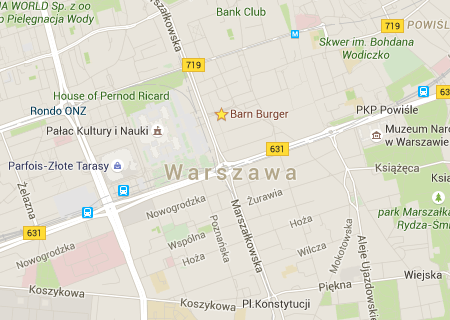

If you're building a responsive website or mobile game and want it to work correctly on the popular devices, then you need to test it yourself. Instead of trying to collect all the devices on your own you can visit the local Open Device Lab and use the available resources for testing. Don't worry about owning the proper devices and just focus on the most important part of your work which is development.
Warsaw Open Device Lab is established to help the local developer community to be able to test their work on a range of mobile devices.
About the project
What is an „Open Device Lab“?
The fragmentation of operating systems and browsers as well as the diversity of internet-enabled devices makes it impossible for the vast majority of developers to personally own a representative pool of test devices. Nevertheless, quality assurance across real devices is a must to ensure a pleasant user experience, sufficient stability and security.
Open Device Labs are a grass roots community movement. They establish shared community pools of internet connected devices for testing purposes of web and app developers. In result, ODLs lead to an ultimate improvement of the web and app experience both for developers and for consumers.
Firefox OS Device Lab
This device lab started with a focus on Firefox OS and is the largest such device collection in Poland, but we're open for any system or platform. Along with the availability of the devices to test your web apps and games on them, you can also find support and knowledge from the developers building their applications.
Feel free to get in touch if you have any questions or issues.
Open Device Labs in Poland
There are currently two active device labs in Poland:
- Open Device Lab in Cracow at odl.makingwaves.pl thanks to Making Waves team
- Open Device Lab in Warsaw at devicelab.enclavegames.com thanks to Enclave Games team
Feel free to get in touch if you need help setting up the device lab yourself or want to add the newly created one to the list above.
Device library
Here is the detailed list of all the available devices in Warsaw.
| Device name | Operating system | Display size | Screen resolution | Contributor |
|---|---|---|---|---|
| Flame | Firefox OS 2.0 | 4,5" | 854 × 480 | Andrzej Mazur / Mozilla |
| Geeksphone Keon | Firefox OS 1.3 | 3,5" | 480 × 320 | Andrzej Mazur / Mozilla |
| Alcatel One Touch Fire | Firefox OS 1.2 | 3,5" | 480 × 320 | Andrzej Mazur / Mozilla |
| ZTE Open | Firefox OS 1.2 | 3,5" | 480 × 320 | Andrzej Mazur / Mozilla |
| Sony Xperia Z3 Compact | Firefox OS 3.0 | 4,6" | 1280 × 720 | Andrzej Mazur / Mozilla |
| RD-PQ | Tizen OS 2.2 | 4,8" | 1280 × 720 | Andrzej Mazur / Samsung |
| Samsung Z1 | Tizen OS 2.3 | 4,0" | 800 × 480 | Andrzej Mazur / Samsung |
| Ouya | Android 4.1 | - | - | Andrzej Mazur |
| Oculus Rift DK2 | - | - | - | Andrzej Mazur / Mozilla |
| Leap Motion | - | - | - | Andrzej Mazur / Mozilla |
| Panasonic TV | Firefox OS 2.5 | 50" | 3840 × 2160 | Andrzej Mazur / Mozilla |
| Apple iPhone 4 | iOS 7.1.2 | 3,5" | 960 × 640 | Andrzej Mazur |
| Apple iPad 3 | iOS 9.3.3 | 9,7" | 2048 × 1536 | Andrzej Mazur |
| Samsung Galaxy SIII | Android 4.0 Ice Cream Sandwich | 4,8" | 1280 × 720 | Ewa Mazur |
If you want to visit the place be sure to get in touch and let us know which devices are you interested in, so they can be fully charged and ready waiting for you.
Visit the lab
This device lab is looking for a place to settle down, but we can arrange a meeting in the current temporary location to test on the available devices.
If you want to visit the place be sure to get in touch and let us know which devices are you interested in, so they can be fully charged and ready waiting for you.
Contact
Get in touch via the social media on Twitter and Facebook or directly via email.
Contribute to the project
Anyone can contribute and help the developer community by lending their old devices or sponsor the open device lab to make it grow.
How to contribute
Give away your old, rusty devices laying around hidden in your drawer, so other developers can use them as the test devices. Spread the word about this site so more developers can learn about the whole idea and don't waste their own resources on the devices they need for testing. Let's create a well-known, friendly place available for the community to come by and use it when needed.
Want to sponsor?
Are you a manufacturer or other business? You want to promote your product to developers, ease your developer device seedings or just help move ODLs forward? Are you an individual willing to donate some spare devices, funds or other love to an ODL? Please get in touch so we can talk about the details!